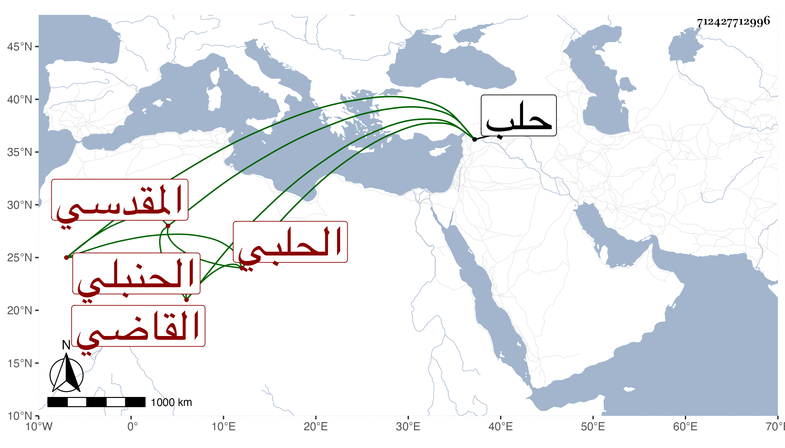

0902Sakhawi.DawLamic.ITO20230111-ara1.EIS1600.712427712996
Biography ID: 712427712996
561
أحمد بن محمد بن موسى بن فياض بن عبد العزيز بن فياض الشهاب أبو العباس المقدسي الأصل الحلبي الحنبلي القاضي . ولي قضاء حلب سنين في مرتين إحداهما عن عمه الشهاب أحمد بن موسى بسكون وعقل ، وكان شكلا حسنا رئيسا عنده لطف وحشمة ورياسة ومكارم ومحبة في العلماء . مات معتقلا في الفتنة بقلعة حلب في رابع عشر رجب سنة ثلاث . ذكره ابن خطيب الناصية .
